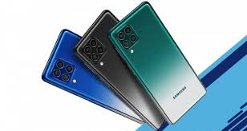

Samsung F52
Samsung Galaxy F52 5G: cerebro Qualcomm, carga rápida y 64 megapíxeles para la última gama media Android
Samsung Galaxy F52 5G: cerebro Qualcomm, carga rápida y 64 megapíxeles para la última gama media Android
Oppo reno 5;panel AMOLED, cámara cuádruple y carga rápida en un nuevo móvil 5G de gama media
Iphone 12 pro max; Fotos con poca luz. Ceramic Shield. Escáner LiDAR. Pantalla Super Retina XDR. Retratos con modo Noche. Grabación en Dolby Vision. Chip A14 Bionic.
Poco x3 pro ;Se trata de una evolución del POCO X3 NFC, centrada en apariencia en dar un salto a nivel de rendimiento al dejar atrás la serie 700 de Qualcomm.
Exynos es la serie de SoCs basados en ARM fabricado por Samsung Electronics

Mediatek distribuye productos como componentes para comunicaciones wireless
a13 bionic es un microprocesador basado en la arquitectura ARM de 64 bits diseñado por Apple Inc y manufacturado por TSMC.
La unidad central de procesamiento de los Snapdragon utiliza el set de instrucciones de tipo RISC desarrollado por ARM.